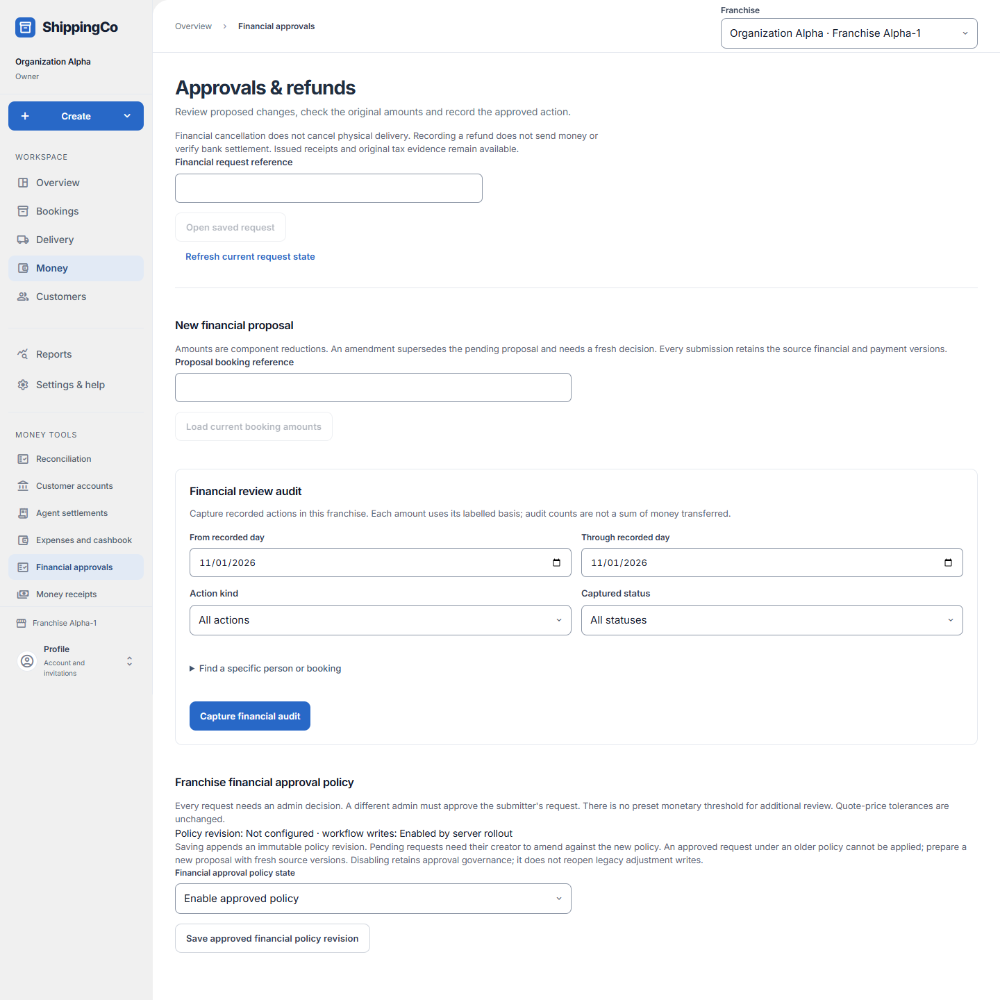

Approvals and refunds
What this helps you do
- Request, independently review and record financial corrections or actual refunds.
Open this feature
- Money > Financial approvals.
- Check the active branch first. Available actions depend on your role and the selected record.

Prepare proposal
- Enter Proposal booking reference and Load current booking amounts before choosing Proposed action and Proposal reason.
- For a reduction enter the pre-tax, taxable base, CGST, SGST, IGST and rounding reductions. These reduce current amounts; they are not replacement totals.
- For refund enter actual refund amount within available refundable credit. For refund correction select Original refund to correct and the wrongly recorded amount to restore; this restores credit without a new transfer.
- Optionally add up to ten document links with kind and real reference. External invoices and credit notes remain manually recorded, unverified evidence. Select Submit for financial approval; amendments use Submit amended proposal.
Review and apply
- Open the saved request by reference or select its saved record. A different administrator selects Approve financial proposal or Reject financial proposal after review; the submitter cannot approve their own request.
- Amend my pending proposal replaces it and requires a new decision. Check current booking evidence and policy before applying an approved change.
- For approved actual refund choose source account, allowed return method, actual refund time in Kolkata, private beneficiary reference and private actual transfer reference. Record approved actual refund only after the real money return.
- Financial cancellation does not stop physical delivery. A saved refund record does not send money.
Audit and policy
- Set Financial review audit dates, Action kind and Captured status. Expand optional actor or booking reference filters only when needed. Capture financial audit saves that evidence.
- An administrator can enable approved policy or disable new approvals and applications, then Save approved financial policy revision. Disabling is not an approval bypass.
- A changed policy requires pending proposals to be amended. An older-policy approval cannot be applied; prepare a proposal against current policy and amounts.
Fields and when to use them
These fields belong to the actions above. Complete the fields for your selected action; optional filters may stay blank.
- Financial request reference: Use the reference from the matching saved record or real supporting document. Do not invent one. Use when shown for the selected action.
- Proposal booking reference: Use the reference from the matching saved record or real supporting document. Do not invent one. Use when shown for the selected action.
- Proposed action: Select the proposed action appropriate to the action explained above. Use when shown for the selected action.
- Proposal reason: Explain why you are making this request or change. Use the real business reason. Use when shown for the selected action.
- Original refund to correct: Select the original refund to correct appropriate to the action explained above. Use when shown for the selected action.
- Refund source account: Select the refund source account involved in this action; check its account and responsible person. Use when shown for the selected action.
- Actual return method: Choose how the money was paid or checked. Use the option that actually applies. Use when shown for the selected action.
- Actual refund time (Kolkata): Enter when the event really happened. Use the time zone named in the label. Use when shown for the selected action.
- Private beneficiary reference: Use the reference from the matching saved record or real supporting document. Do not invent one. Use when shown for the selected action.
- Private actual transfer reference: Use the reference from the matching saved record or real supporting document. Do not invent one. Use when shown for the selected action.
- Financial approval policy state: Select the financial approval policy state appropriate to the action explained above. Use when shown for the selected action.
- From recorded day: Enter the from recorded day for this action, using the time zone shown. Use when shown for the selected action.
- Through recorded day: Enter the through recorded day for this action, using the time zone shown. Use when shown for the selected action.
- Action kind: Select the action kind appropriate to the action explained above. Use when shown for the selected action.
- Captured status: Choose the state or decision that matches the record you have reviewed. Use when shown for the selected action.
- Actor reference (optional): Use the reference from the matching saved record or real supporting document. Do not invent one. Optional
- Booking reference (optional): Use the reference from the matching saved record or real supporting document. Do not invent one. Optional
- Pre-tax charge / Taxable base / CGST / SGST / IGST / Rounding reduction (₹): The amount to remove from each existing component. These are reductions, not replacement totals. For discount or correction
- Actual refund amount (₹): The money actually returned, within the available refund credit. For refund
- Incorrectly recorded refund amount to restore (₹): The part of an incorrect refund record to undo. This does not transfer money. For refund correction
- Document kind and reference: Select an issued receipt, external invoice or external credit note and enter its real reference. Optional; up to ten documents
If you need to retry
- No records: check branch, account or customer and filters. Use Load more where offered before deciding a record is missing.
- Invalid or missing value: read the form message, correct the draft, then review amounts and references again.
- Uncertain save: use the offered retry for the same request. Do not create a second payment, return, expense or application to guess whether the first saved.
- Changed evidence or policy: refresh current records and review them before a new request. A saved report retains its captured figures; create another report for current results.
About this guide
Checked against the current screen code on 1 November 2026. This explains app behaviour, not tax or accounting advice. Buttons and records can differ by role.